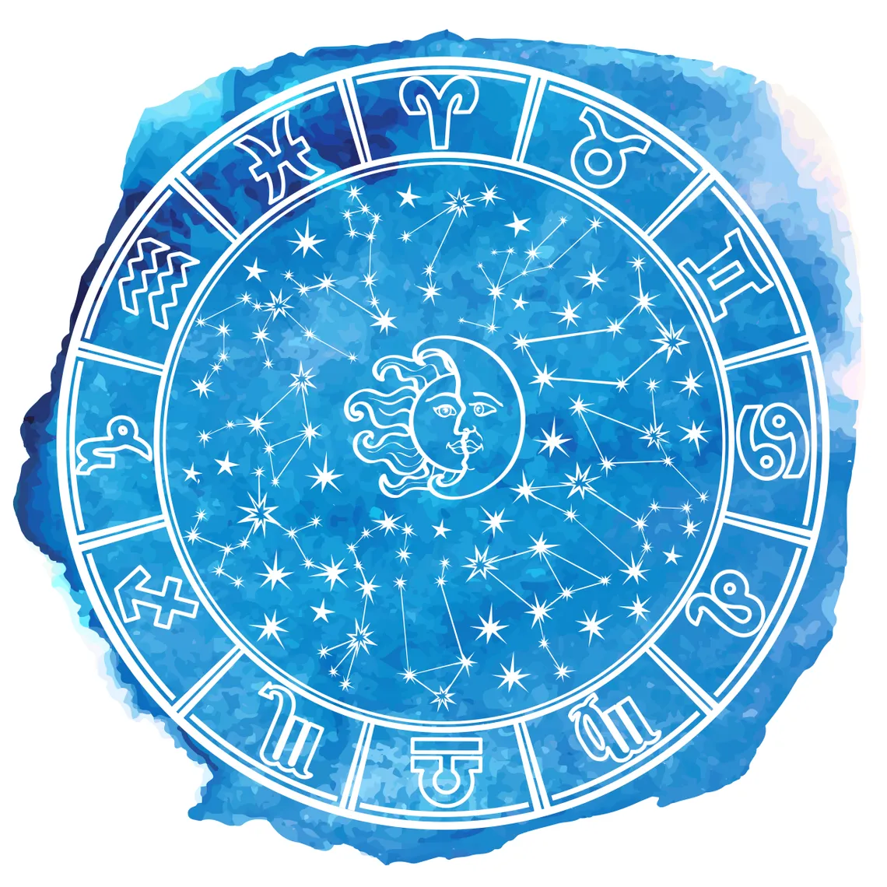

<section class="section__stars-say" id="aboutMe">
    <div class="stars__content-position">
      <div class="stars__image-container">
        
      </div>
  
      <div class="stars__text-container">
        <h2>What Can the Stars Say?
          <hr class="hhrr_line_size"/>
        </h2>
  
        <h3 class="hh3_text_what_can">
          What is your life’s potential? ​How can you ​align yourself with ​the
          ​stars energies to feel more in tune and more connected to what’s going
          on inside and outside of you?
        </h3>
        <p class="pp_text_what_can">
          Far too often healing is geared towards elevating attributes that are
          deemed valuable by the status quo. I believe that what makes us
          different informs our humanity and that our humanity is our greatest
          asset. I believe that what we have survived can eventually help us to
          thrive. I believe that we all have within us the wisdom that we need at
          any and every moment. Sometimes we need a guide to get there, other
          times we do it all on our own. I offer what I know in hopes that it
          stimulates and awakens others’ ability to access their own wisdom.
        </p>
  
        <div class="stars__text-read-more">
          <details class="main__plus-minus">
            <summary class="stars__text-pp-more">Read more</summary>
            <p>
              I have been a student of astrology since I was 18 years old and a
              counseling astrologer for almost 20 years. My horoscopes can be read
              in many popular magazines, such as Vogue, Harper's Bazaar, The New
              York Times and more. I make personal readings for businessmen,
              traders, investors, actors, doctors and ordinary people who believe
              that stars can tell us much about the life path.
            </p>
            <p>
              I aim to make astrology practical, approachable, and useful.
              Otherwise it’s all just cosmic hot air and planets far from reach. I
              hope to be in a dialogue with you about what you would like to know
              as it pertains to astrology, and how I can best serve you.
            </p>
          </details>
        </div>
      </div>
    </div>
  </section>
  